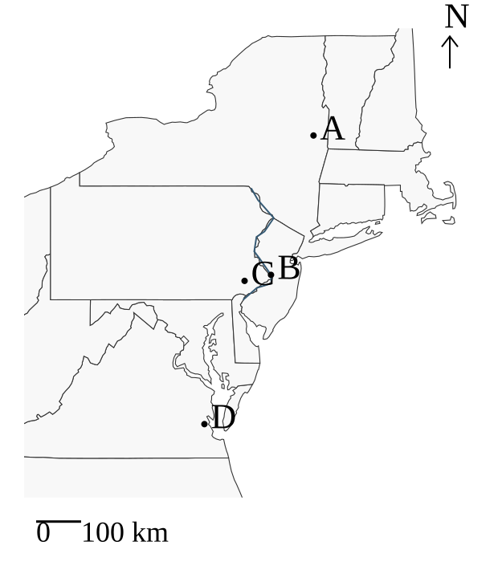

Name: __________________
Use phrases and one Q7 paragraph.
A, Congress, 1776 Declaration: equal inherent rights; consent; repeated abuses justify separation. Grievance: denied jury trials. Q1a. Use A to explain Congress's separation argument, including the jury grievance. Q1b. Explain equality, natural rights, legal rights, and rule of law. Q1c. Name one group denied equal rights in practice. |  |
B, Dartmouth Black petitioners, 1780: taxed without votes; Black military service; request relief. P: Oneida American allies at Saratoga; Bay of Quinte ancestors British allies. Free and enslaved Black people served both sides; freedom varied. Made-up households: loyal to Britain; avoiding armies for safety. L: Washington sustained an army; Franklin negotiated French assistance. R, Articles: retained state powers; state taxation/contributions; unanimous amendment. Massachusetts, 1786: scarce cash, debts/taxes, property threatened, little petition relief, court closures; reform already underway. F, made up: prices generally keep rising; savings fixed. Later prices generally keep falling; crop receipts fall; debt remains eighteen dollars. Then an available adult seeks paid work, finding none. | Q3. Use P to correct: Everyone wanted independence and shared one status and outcome. Q4. Compare L's leaders' actions and effects. Q5a1. Use R to explain states' acceptance of a league. Q5a2. Explain one weakness and its effect on the plan. Q5b. Use R to link two unrest pressures with existing reform calls. Q6a. Name and explain each condition in F. Q6b. Explain one effect on F's made-up family. Q7a. Explain this exhibit question's use for visitors, using A or B. Q7b. Compare A/B's shared principle, gap, makers, and purposes. Q7c. State a historical claim answering the unit question. Q7d. Select one attributed detail per source supporting your answer. Q7e. Connect both details to your claim in one paragraph. |
Primary originals public domain. Modern facts paraphrased. Curio Class, CC BY 4.0.